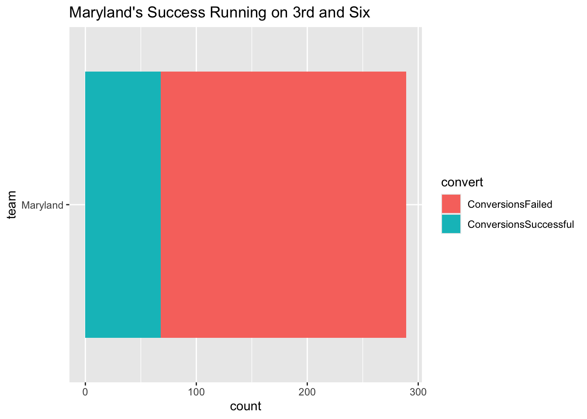
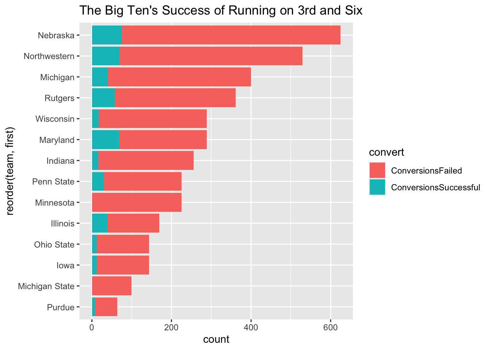

Running on 3rd and Six Doesn’t Lead to First Downs
lowercaseword
lowercaseword
lowercaseword
Author
Matthew Neus
Published
October 16, 2024
When Maryland attempted to pick up six or more yards late in the fourth quarter against Illinois in 2023, some defended coach Michael Locksley’s decision because of the success the Terps had on the ground against the Illini. The Terps didn’t convert on the 3rd down try, and ended up losing to Illinois.
Maryland’s track record when rushing on 3rd and six in Lockley’s tenure suggested that a passing play would have had a better chance at a conversion. The Terps routinely struggle to move the chains when running on 3rd and six, and much of the Big Ten share similar struggles.
Code
library(tidyverse)
── Attaching core tidyverse packages ──────────────────────── tidyverse 2.0.0 ──
✔ dplyr 1.1.4 ✔ readr 2.1.5
✔ forcats 1.0.0 ✔ stringr 1.5.1
✔ ggplot2 3.5.1 ✔ tibble 3.2.1
✔ lubridate 1.9.3 ✔ tidyr 1.3.1
✔ purrr 1.0.2
── Conflicts ────────────────────────────────────────── tidyverse_conflicts() ──
✖ dplyr::filter() masks stats::filter()
✖ dplyr::lag() masks stats::lag()
ℹ Use the conflicted package (<http://conflicted.r-lib.org/>) to force all conflicts to become errors
Code
library(cfbfastR)
Here we load the play-by-play data for the complete season’s from 2019-2023, and all the games played so far in 2024.
From that data, I filtered the data to only show plays that were ran on 3rd and six. From 2019-2024, there were 15,661 plays ran in college football on 3rd and six.
Code
third_and_six <- pbp_data |>filter( down =="3", distance =="6" )
From those plays, there were 22 different play types that occurred. 3,173 were rushes and 135 were rushing touchdowns. The most common play ran on 3rd and six were passes that ended in completion, followed by passes ending in incompletions.
Navy, Army and Air Force led Division I in run plays on 3rd and six, which was expected from the service academies. Georgia Southern and Ole Miss rounded out the top five as the most run-heavy teams on that specific down and distance. Maryland, from 2019-2024, has only ran 17 run plays on 3rd and six.
# A tibble: 280 × 2
pos_team total
<chr> <int>
1 Navy 59
2 Army 51
3 Air Force 42
4 Georgia Southern 34
5 Ole Miss 31
6 Kent State 30
7 New Mexico 30
8 Baylor 29
9 Louisiana 29
10 Georgia Tech 28
# ℹ 270 more rows
Maryland’s 17 rushes on 3rd and six have primarily come before the 2024 season. The Terps have only run once on a 3rd and six so far this season, which came in the second quarter against UConn when they were already up 14-0. Maryland failed to convert the third down try, and haven’t tried running from six yards on 3rd down since.
That run has been the only rush on 3rd and six since Maryland’s decision to run it late against Illinois in 2023, which they ended up losing a yard on and ultimately the game.
Warning: Returning more (or less) than 1 row per `summarise()` group was deprecated in
dplyr 1.1.0.
ℹ Please use `reframe()` instead.
ℹ When switching from `summarise()` to `reframe()`, remember that `reframe()`
always returns an ungrouped data frame and adjust accordingly.
Looking at the data from 2019 to this season, Maryland ran the ball on 3rd and six 17 times. Seeing how often they convert these opportunies for first downs, I mutated the data to say the Terps converted the third down chance if they gained more than six yards, or they failed if they gained six yards or less. They failed to convert the 3rd and six 13 different times.
Code
library(scales)
Attaching package: 'scales'
The following object is masked from 'package:purrr':
discard
The following object is masked from 'package:readr':
col_factor
Code
ggplot() +geom_bar(data = firstdownrate,aes(x=team, weight = first, fill = convert) ) +coord_flip() +scale_y_continuous(labels=comma) +labs(title="Maryland's Success Running on 3rd and Six", )

I’ve opted to not include the four new members of the Big Ten in 2024 because they would only add data for this season’s games so far. I’m including the 14 teams that have been in the Big Ten since 2019.
Warning: Returning more (or less) than 1 row per `summarise()` group was deprecated in
dplyr 1.1.0.
ℹ Please use `reframe()` instead.
ℹ When switching from `summarise()` to `reframe()`, remember that `reframe()`
always returns an ungrouped data frame and adjust accordingly.
`summarise()` has grouped output by 'pos_team'. You can override using the
`.groups` argument.
Code
firstdownsb1g |>pivot_longer(cols =starts_with("conversions"),names_to ="convert",values_to ="first" ) -> firstdownrateb1gggplot() +geom_bar(data = firstdownrateb1g,aes(x=reorder(team, first),weight = first, fill = convert) ) +coord_flip() +scale_y_continuous(labels=comma) +labs(title="The Big Ten's Success of Running on 3rd and Six",)

Nebraska opted to run the most when faced with a 3rd and six, with little success like the rest of the conference from 2019-2024. Maryland is one of the best teams when it comes to converting 3rd and six scenarios on the ground, yet they’ve only achieved four of 17. Some teams, like Minnesota and Michigan State, have failed in every attempt to gain more than six yards on 3rd down and six when rushing.
When Big Ten teams are faced with 3rd and six situations, they opt to pass the ball more than run it. And when they do decide to run it, they often fail to pick up more than the necessary six yard to get a first down. Running the football on 3rd and six normally leads to a fourth down, which could be the difference in a win or loss like Maryland against Illinois last year.